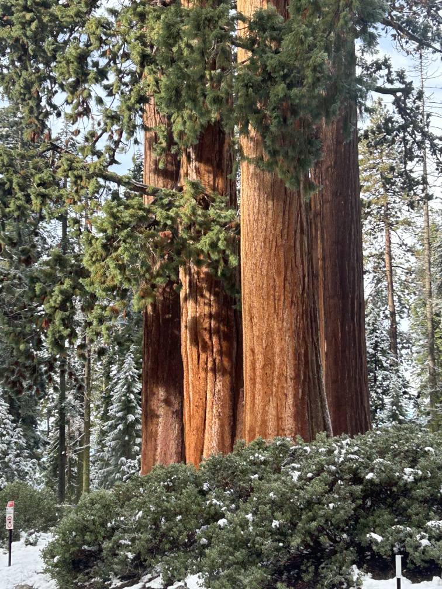
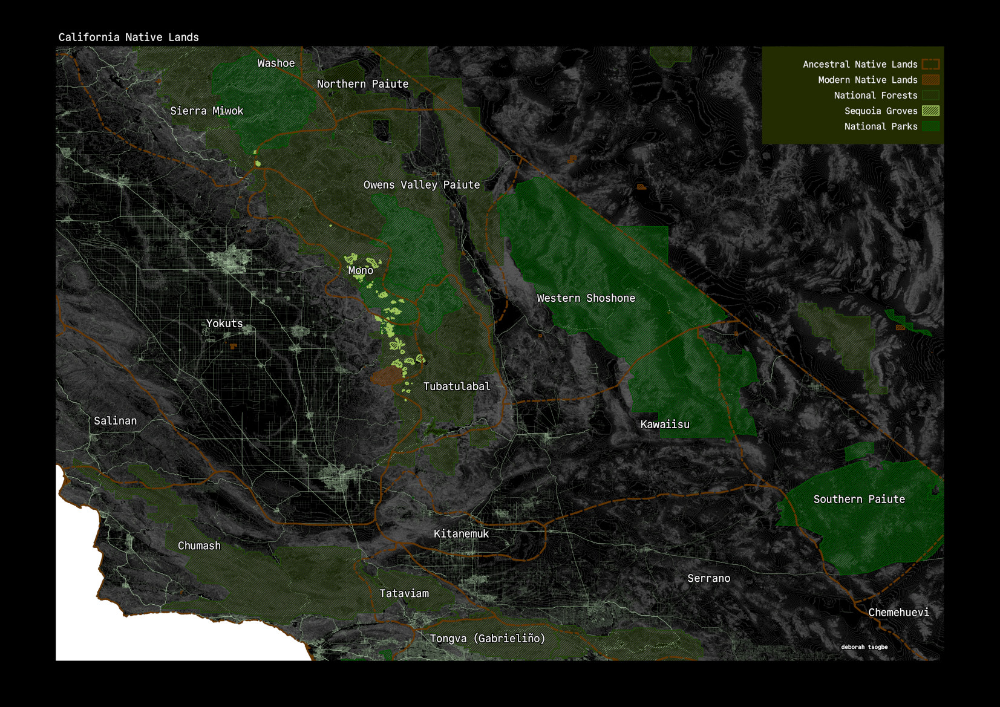
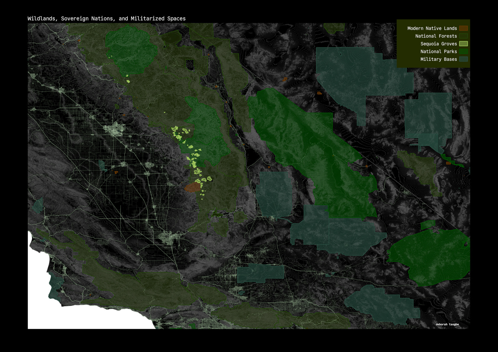
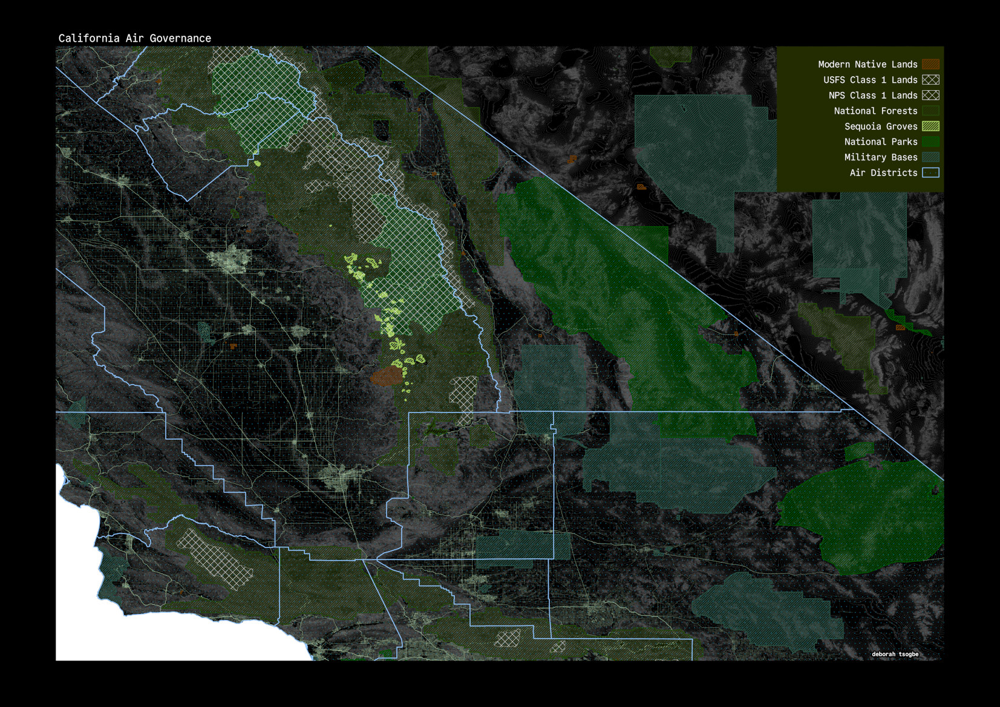
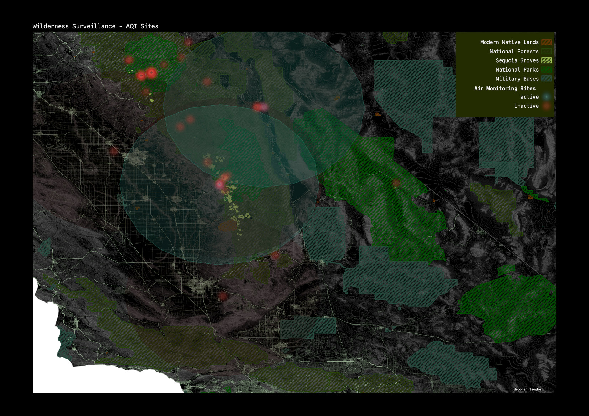
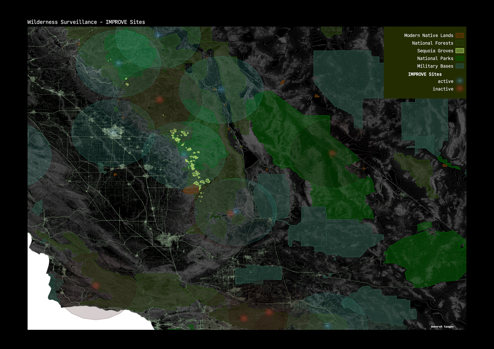
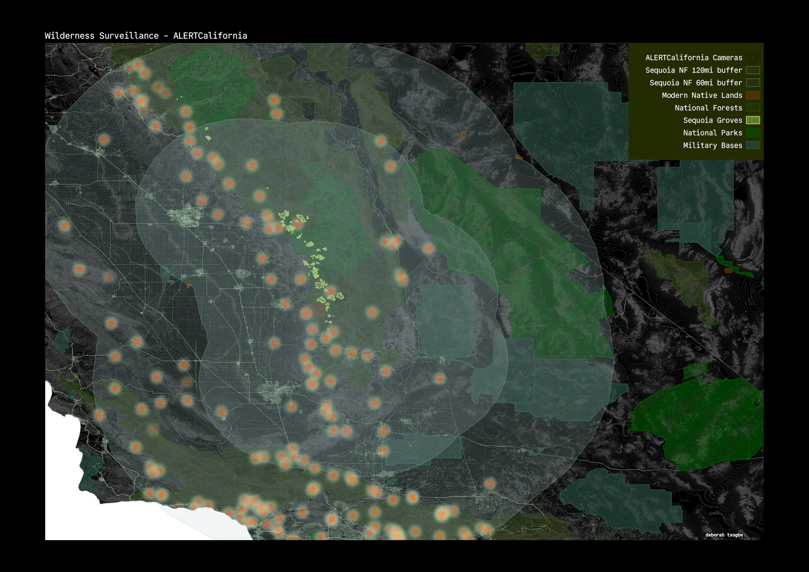

environmental surveillance in giant territory


this is a journey into air and fire monitoring networks in and around the sequoias. giant territory is the most peaceful place i have ever been*. it is also where i have taken some of my deepest breaths**. being there felt safe, like maybe the trees were watching over me. i started this because i am curious about who is watching the trees, and why. in the end i recognize that our treatment of the wildlands reflects how we engage with each other at a communal scale.
* i have lived in 2 of the most surveilled cities in the US and would like to think that the wilderness offers respite from this
** i have asthma and i spent 12 years on and off chain-smoking cigarettes, joints, and pens. i stopped in 2025 but have done lasting damage to myself. air quality is on my mind a lot
-- military environmental complex --
the first park rangers in the USA were soldiers. Sequoia and General Grant (Kings Canyon) national parks were established 26 years before the creation of the national park service in 1916, long before the average American understood the need to tread carefully in the wildlands. for decades, US Army soldiers preserved, patrolled and policed the Sierras, protecting parks from visitors, passers-through, and native peoples. giant territory is the home of the Mono and Yakuts peoples, who are now sequestered on the Tule River reservation within Sequoia National Forest.

it's of note to me that at least 10% of the soldiers policing the wilderness were buffalo soldiers - Black infantrymen - whose units formed after the US Civil War. they were called such because they were tasked with fighting native peoples on the western frontier. military careers offered the buffalo soldiers social and economic reward, giving them an "opportunity to prove they were worthy of the full citizenship granted by the 14th amendment." that Black and marginalized individuals turned to carceral roles in society is particularly interesting, given that policing in the US was born from efforts to hunt and recapture enslaved peoples.
overall, for reasons of self-preservation, park soldiers participated in the exertion of will over others, often exhibited as force or violence. knowing this, it's amusing to me that present day national parks, forests, and monuments are often surrounded by militarized land. i know at least that this is common in California. i've gone camping a few times on forts and army bases and not thought twice, in the moment.

-- agentic nature --
'nature' is a broad, flexible concept. on one hand pure and innocent, somewhere to escape to; on the other brutal and unforgiving, somewhere to get lost. in either case there is an assumption of the right to un-inhibitedness, bolstered by the idea that what happens in the wild-lands is separate or asynchronous from happenings in civilization.
this is increasingly challenged by human penetration into remote territories, justified by a need to save the environment from ourselves. in this way, humans are considered both apart from and within nature - "to the extent that something is human, it is not natural and vice versa." despite, or perhaps in light of this, we set out to invent things that observe, mimic and reflect the same nature we dissociate ourselves from.
observation is made easier through division and categorization. one such example is the implementation of Class 1 areas through the clean air act. the Class 1 designation provides special air quality and visibility protection to national parks and wilderness areas that meet the criteria. Class 2 areas are allowed moderate air quality deterioration. further, California governs air quality through designated air districts which are responsible for regional air quality planning, monitoring, and permitting. these districts, implemented in 1947 through the California Air Pollution Control Act, span several counties, numbering 35 in all.

our thorough regimenting of space lends itself well to a surveillance attitude. a trend of policing in urban life is reflected in the pockets of wild life that we surround. from airport face scanners to animal cams, the messaging is one of dominance. ubiquity of surveillance can be understood to mean that there is no right to wildness, that we are a society removed from personal sovereignty. watching is a substitute for direct engagement and often leads to narrative speculation. we cannot know the interiority of a thing just from observation, but we can make a series of assumptions. the people must be watched -- everything is performance or threat. the trees must be watched -- everything is remarkable.
-- speaking of the trees --
in the case of the sequoias, their primacy was heavily undermined by the USFS's 50 year suppression of fire with the "10 o'clock rule". following a large fire in 1910, USFS placed a moratorium on even the lowest severity of fires, despite that the sequoias rely on a 15-year cycle of low to mid-severity wildfires to promote their growth and dissemination. by the time the USFS realized their error there was major damage; giant territory had already been overstocked with unhealthy trees and modern day fires burn much longer and hotter than ever before. the Tule River tribe have made efforts to reintroduce good fire but their efficacy remains to be seen.
in addition to fire watch, the US has been monitoring air pollution and its effects since 1970, upon the advent of the Clean Air Act. the NPS monitors air quality across several networks:
- Interagency Monitoring of Protected Visual Environments (IMPROVE)
- National Atmospheric Deposition Program/National Trends Network (NADP/NTN)
- National Trends Network (NTN)
- Mercury Deposition Network (MDN)
- Clean Air Status and Trends Network (CASTNet)
- Gaseous Pollutant and Meteorology Program (GPMP)
for my purposes i focused on IMPROVE and GPMP networks, mostly because of geographic placement. in my search it was notable to me that most active sites today in giant territory are IMPROVE ones, which measure optics as well as traditional emissions. historically, management of the sequoias has been focused on their aesthetic value versus their role as ecosystem supporters.


overall it's kind of frustrating trying to gather data about AQI sites, as federal and state sources have conflicting information. it's hard for me to really say which ones are more correct, but what worked best for me was crossreferencing info from this EPA interactive map, the air resources division, the IMPROVE data page, and the California Air Resources Board.
the ALERTCalifornia system, on the other hand, is consistently documented. since 2001, California, through research programs at UC San Diego, has had networks in place, in one form or another, to monitor fire activity in the wildlands. the first generation of the ALERTCalifornia network was the High Performance Wireless Research and Education Network, a wireless cyberinfrastructure that provided connection to fire stations and posts, camps, and air-bases. over time they installed high-res motion detection cameras, starting in San Diego's Laguna Mountains and spreading throughout California, eventually reaching Nevada, Oregon, and Washington as ALERTWildfire branches.
the present day ALERTCalifornia network includes 1200 web-connected infrared cameras installed in high-risk wildlands. they run 24/7, are capable of 360-degree sweeps every 2 minutes, can see for 60 miles on a clear day, and 120 miles on a clear night. the 360-degree mechanics of the cameras mimics a dragonfly's compound eye, which is composed of 30,000 lenslets.
the network began using AI in 2023 to better detect fires and aid firefighters by mitigating watchstander fatigue and reducing false positives. they alert first responders of developing situations and are used to aid in situational awareness during containment and evacuation efforts.

there are 128 ALERT cameras within a 60 mile radius of Sequoia National Forest and 359 within a 120 mile radius. there is a public database of ALERTCalifornia cameras. you can use this data in QGIS through ArcGIS' rest api, but for my purposes i went through and manually compiled a csv of the cameras of interest to me. the public database updates daily, if not hourly.
from 2019 to 2023, California averaged 8,190 wildfires a year. the current 5-year average is 5,900, with a 2026 YTD count of 4,601. whether this is the effect of ALERTCalifornia alone is unclear.
parallel-ly, in early 2025, UCSD Health began to explore the use of AI cameras in patient rooms with the intent of monitoring for dangerous incidents and alerting care providers.
-- what we can say --
because everything emanates from a carceral foundation, solutions often turn out to be punishments disguised as public good. surveillance is, objectively speaking, a form of abuse, yet we deploy it casually.
when we speak of the wildlands, it often seems that we speak from perspectives of objectification, ownership and superiority. for reasons of perceived safety, we have taken comfort in the omnipresent eye, watching constantly for notable activity. surveillance attitudes, regardless of their benefit, promote mistrust and persecution. the phenomenon of surveillance transforms looking from a neutral, benign act to a charged agenda.
for the animal (human and other), it fundamentally alters the psyche. for the environment, it negates concepts of raw naturality. when viewed through a filtered lens, nothing is truly wild. everything has hidden facets to uncover, and so nothing can rest.
this work was done initially for Indigenous Cartographies & GIS in summer 2026
i used ArcGIS' rest api to access the geodata for California's ancestral native lands. other data sources not mentioned in the text include:
- OpenDEM for topography
- Data Basin for Sequoia related data
- the California state geoportal
- NPS GIS tools
- and Sequoia NP archives